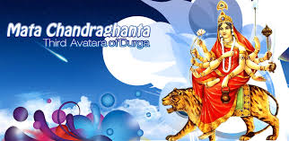

Pooja Vidhi

Navratri pooja and items:
- Mata rani ka shingar (cosmetics) – my mil keep them in the house temple and whenever (any day of navratri) she go to a city temple devoted to maa then she offer these shingar item in the temple. the shingar items include red bangles, red chunri, red lipstick, bindi, mehendi, kajal, nail polish, anklets, mirror and sindhur.
- One diya or lamp is burned through out the nine days and care must be taken that there is enough ghee or oil in the diya all the time. it is akhand jyoti (burning all the time for nine days). this akhand jyoti will destroy all the negativity in your house.
- Along with this one red color chunri or cloth and one mature coconut is kept in the house temple. the thin edge of coconut should be towards the temple.
- One kalash (earthen or copper pot) is filled with water, 5 betel nuts or suparis, sugar, rice and a five rupees coin and is kept with all these pooja items. in the kalash, red color string of mata rani is tied and this kalash water is sprinkled in your house after the kanjak pooja on 8th or 9th day. you can also drink this water. this water is considered as charanamrit and is holy.
- After taking bath in the morning , aarti is done for devi maa and bhog is given to maa in the form of dry fruits (5 types), milk, bananas, mishri or other fruits. you can also offer fresh flowers. after doing the aarti or pooja only, my mil takes the food. the same aarti is done in evening time (sandhya kaal) too. burning incense, dhoop etc is part of morning and evening pooja.
11. please refrain from tasting the food ingredients for bhog, while assembling or preparing the bhog.